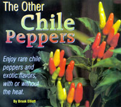
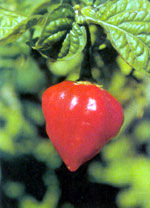
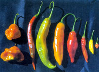
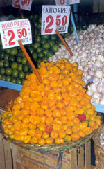
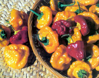

If you're looking for unexpected flavors, like lemon or apricot, or extra heat in your chile peppers, it's time to explore the "other peppers." Ninety percent of pepper varieties, from bells to jalapenos, are the same species -Capsicum annuum.
Among the rest are smoky, fruity habaneros (C. chinese), fiery 'Tabasco' peppers (C. frutescens), citrus-like baccatums (C. baccatum) and pear-shaped rocotos (C. pubescens). Although these peppers are usually smaller than bell peppers, they pack their own special punch in terms of flavor and heat. Whether you want really fiery peppers or great flavors without the heat, you'll find lots of favorites among these four lesser-known species.
(The numbers we've listed after each variety name designate which companies listed on Page 89 sell it.-MOTHER)
THE HABANEROS
According to pepper expert Dave DeWitt, co-author of The Pepper Garden, "All the C. chinense species are often referred to as habanero, but that appellation is a misnomer because literally hundreds of pod types exist [including the Scotch bonnets pictured on Page 891. The name habanero refers to a specific pod type from the Yucatan Peninsula of Mexico."
C. chinense, which usually produce pods 1 to 2 inches in diameter, are known for being fiery and flavorful, but describing that flavor is difficult. DeWitt, known affectionately as "The Pope of Peppers," has written more than 30 books about peppers and other spicy foods, so he's familiar with the dilemma. "All fresh, ripe chiles have fruity overtones," he says, "but there's a big problem trying to describe their flavor components. We don't have the descriptors to communicate what the actual flavors are."
Usually, C. chinense peppers are described as having a smoky, apricot-like flavor and a fresh, fruity smell that can't be missed. This base flavor is noticeable in a wide range of varieties, from such mild peppers as 'Aji Dulce' (1, 2, 4, 5) to such hellishly hot habaneros as 'Red Savina' (2), in which you can taste the smoky fruitiness right through the heat.
Because of their fruitiness, C. chinense peppers are often used in fresh salsas and in hot sauces based on carrots, onions and tropical fruits such as mangoes.
If you're looking for the hottest chiles around, you'll find them in the C. chinense group. Several methods exist for ranking chile heat, but the standard is the Scoville Heat Unit (SHU). C. chinense varieties range from 0 SHUs (the mildest) to 300,000 SHUs (the hottest). Among them are the hottest domesticated peppers ever measured, although most fall between 50,000 SHUs and 100,000 SHUs.
Comparatively, jalapenos (a C. annuum species) range from 5,000 SHUs to 15,000 SHUs.
'TABASCO' PEPPERS
The C. frutescens species includes the well-known 'Tabasco' variety used in the trademarked Tabasco hot sauce.
'Tabasco' (1, 2, 3, 4, 5, 6) originated in the Mexican state with the same name and isn't a particularly hot chile (30,000 SHUs to 50,000 SHUs), but some C. frutescens peppers are truly incendiary-particularly those from Africa, India and the Far East. Others, such as 'Guatemalan Dog's Tooth' (1) and 'Aji Chinchu' (1) taste mildly pungent, with a pronounced underlying flavor best described as "green," as in unripe bell peppers.
FRUITY BACCATUMS
C. baccatum peppers were practically unknown in North America until the early 1990s, when food products containing them as ingredients began appearing on store shelves. They have a fresh, tropical-fruit taste and an appealing aroma, but DeWitt says so many of them exist, with so many different flavor components, that it's difficult to categorize their tastes.
Beth Boyd owns Peppermania, a retail pepper seed and plant company in Stafford, Texas, that offers about 75 varieties each year. She describes the baccatum 'Aji Colorado' (1, 2, 4, 5) as having "a peppery, spicy flavor," and 'Lemon Drop' as having a "very fresh, lemony taste." The bright-yellow pods of 'Lemon Drop' (1, 2, 3, 4, 6) average 2 inches long, have a distinct lemony aroma and taste, and enough heat to let you know they're present. Boyd says in the South, 'Lemon Drop' is the first to set fruit in the spring and continues setting well into cool fall weather.
A nother Texas pepper authority, Jean Andrews, describes a favorite baccatum, 'Aji Flor', also known as 'Aji Orchid' (2, 5), as "crisp, sweet and flavorful." Because of their fruity, often citruslike flavors, baccatums are great for fresh sauces made with herbs and onions, or mixed with lime juice to make ceviche: The acid in the lime juice "cooks" the fish.
Some sources score baccatums as very hot while others score them more modestly-from 30,000 SHUs to 50,000 SHUs-because the heat of different pods from the same variety can vary widely. "Pepper breeders are just realizing how much effect year-to-year growing conditions can have on heat," DeWitt says. "There are indications that as much as half of the capsaicin levels result from growing conditions."
THE ROCOTOS
The rocotos (C. pubescens) are the least known of the chile peppers, and DeWitt says they are the only domesticated species with no remaining wild form. Archeological evidence indicates that rocotos may be one of the earliest domesticated New World crops: They are certainly the first pepper species to be domesticated.
Rocotos come in red, yellow and orange, but are not otherwise differentiated as varieties-except arbitrarily by some seed sup pliers who have assigned varietal names based on color. Examples include 'Manzano Amarillo' (1, 2, 3, 4, 5) for the yellow and 'Manzano Rojo' (1, 2, 3, 5) for the red. Sometimes rocotos are called "apple" or "pear" peppers because of their shapes.
These 1- to 2-inch pods are thick-walled and fleshy, with a pearlike aroma and taste. Rocotos add a special flavor to fresh salsas, especially fruit salsas, but they are also cooked in sauces and combined with potatoes, particularly in Peru. Andrews says that in parts of South America, they are often stuffed with cheese or sausage, and baked.
Rocotos contain a set of pungency compounds that cause them to taste hotter to some people than to others. They range in heat from 50,000 to 100,000 SHUs.
Experimenting with these "other" peppers is the key to accessing the exotic flavors they offer. Try growing some in your garden. Then, use them in your favorite dishes and allow your taste buds to experience a new world of pepper flavors from fruity to pungent, and from hellishly hot to refreshingly sweet.
For more growing advice and great tips, check out Dave DeWitt's book The Pepper Garden,.available on MOTHER'S Bookshelf, Page 127.
Pepper Plant and Seed Sources
1. The Chile Woman
(Plants, or seeds for swap)
1704 S. Weimer Road
Bloomington, IN 47403
(812) 339-8321
www.thechilewoman.com
2. Cross Country Nurseries
(Plants)
P.O. Box 170
Rosemont, NJ 08556
(908) 996-4646
www.chileplants.com
3. The Pepper Gal
(Seeds)
P.O. Box 23006
Ft. Lauderdale, FL 33307
(954) 537-5540
4. Peppermania (Seeds)
12999 Murphy Road #K
Stafford, TX 77477
(281) 564-1500
www.bayoutraders.com
5. Redwood City Seed Company
(Seeds)
P.O. Box 361
Redwood City, CA 94064
(650) 3257333
www.ecoseeds.com
6. Terra Time & Tide
(Seeds)
590 E. 59th St.
Jacksonville, FL 32208
(904) 764-0376
www.pepperhot.com
Mother Earth News
|
 TABASCO' PEPPERSC. frutescens) Flavor: Fruity, with a green overtone similar to unripe bell peppers, or like Tabasco sauce. Heat: Medium to very hot. Description: Compact plants, 1 to 4 feet tall with an intermediate number of branches and smallish leaves. Flowers are greenish-white with blue anthers. Growing tips: Particularly good for container growing. Pods begin ripening 80 to 120 days after transplanting. Plants set 100 or more pods. |
 A 'Bolivian Red' (C. chinense) pepper pod. You'll find the hottest domesticated peppers in the chinese soup . C. chinense |
 BACCATUMS (C. baccatum) Flavor: Spicy, fruity. Heat: Medium to hot. Description: Tall, branching plants with large, dark leaves. Flowers are white with yellowish spots and yellow or tan anthers. Growing tips: Pods begin ripening 120 days after transplanting. Plants set 40 or more pods. |
|
 ROCOTOS C. pubescens) Flavor: Fruity, pearlike. Heat : Hot to very hot. Description: Compact plants average 2 feet with ovate, light- to dark-green, hairy leaves up to 4 inches long. Erect flowers are violet to purple, and seeds are black. Growing tips: Slow to germinate?allow up to seven weeks. Pods begin ripening. 120 to 140 days after transplanting. Plants are more cold-hardy than other species. |
 C. CHINENSE PEPPERS Flavor: Smoky, apricotlike. Heat: Mild to extremely hot. Description: Average 2-foot plants can grow taller, with multiple stems and pale-green, wrinkled leaves. Flowers are white to greenishwhite with purple anthers. Growing tips : Seeds are slow to germinate. Plants do best in high humidity. Pods begin ripening 80 to 120 days after transplanting. Plants can set up to 50 pods. |
|